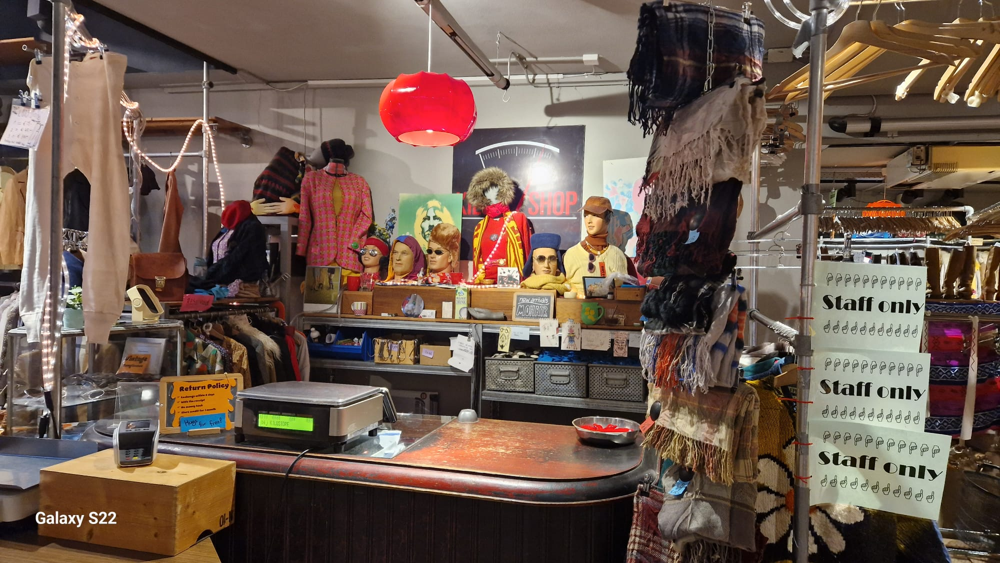

Learn more
Step into the captivating vintageworld of Amsterdam with Retro Love. Our blog gives u the best digital guide to find the vintage treasures that are hidden in the streets of Amsterdam.
At Retro Love, we’re on a mission to show u the best vintage shops for u. Every week we visit and review the retro boutiques in your area. Wether you’re into 60’s, 70’s or u just want to find that special piece for u? Our blog wil be the leading tread in ur journey.
In every blog we make sure to provide u the greatest inside of what kind of styles and pieces they have. So u can find ur favourite store.
But our blog goes beyond fashion, delving into the art of creating a vintage-inspired home and which shops are the greenest. Join us as we share tips on infusing your living spaces with the character and warmth of the past. With each article, Retro Love invites you to join our community, where passion for history, craftsmanship, and enduring style converges in a celebration of all things vintage. Welcome to your virtual retreat of timeless tales and curated finds!